/* irina-rozovsky - proofs */
11 plates. Deterministic overlays rendered by the composition-analysis skill.
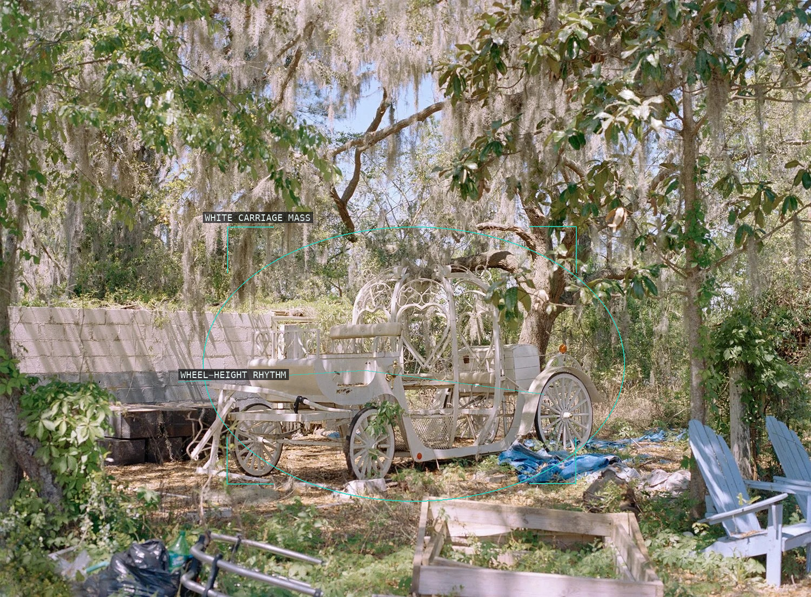
01-traditions-highway-carriage-2018
A decorated carriage is held inside hanging foliage and a low field of discarded objects.
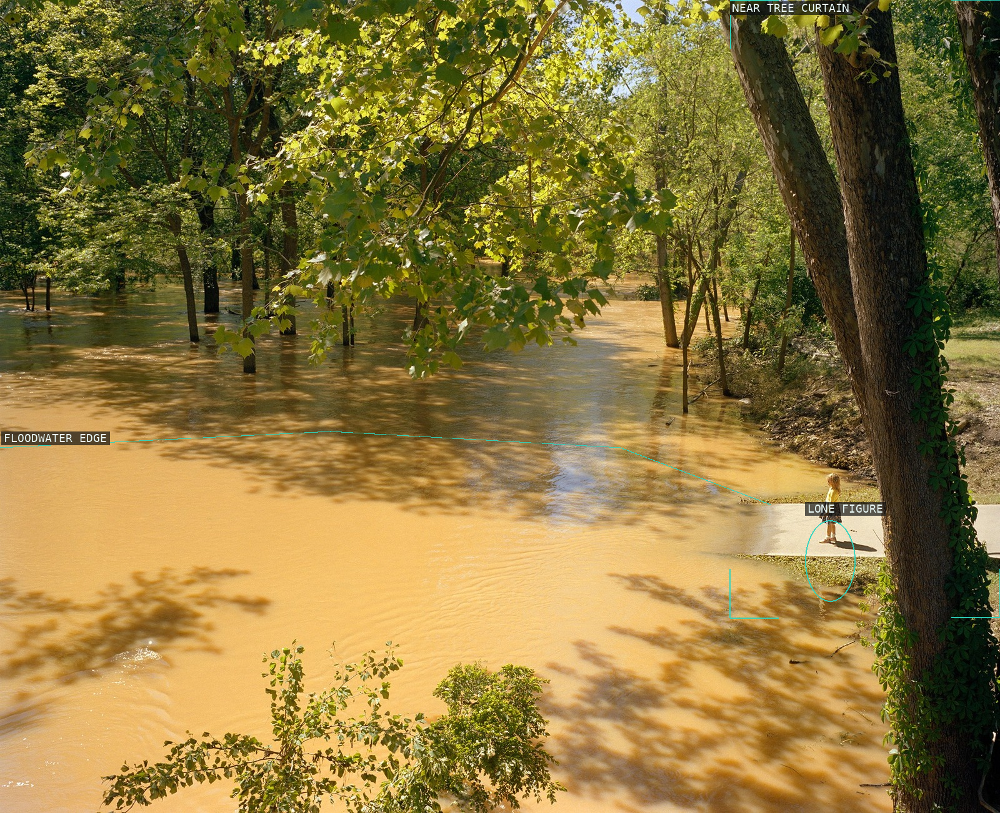
02-traditions-highway-flood-lake-2018
A tiny person at the bank is measured against floodwater, tree trunks, and the dark near trunk.
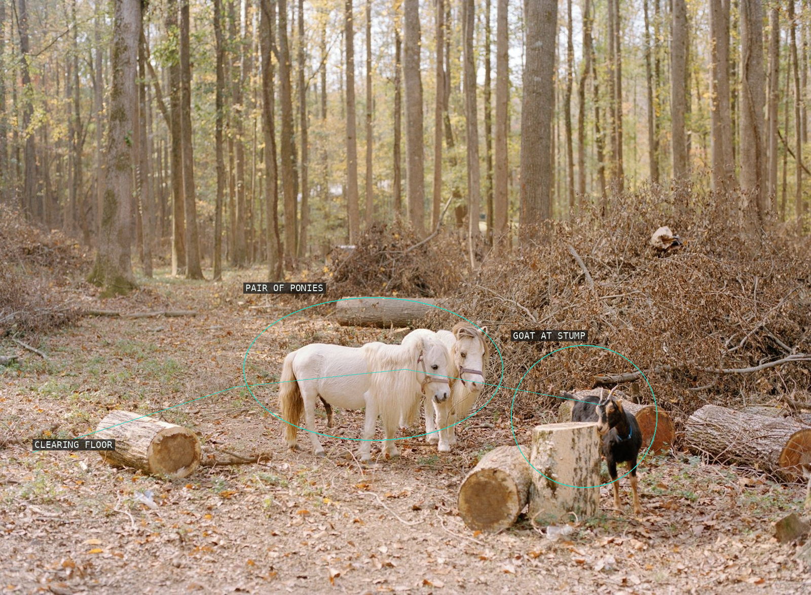
03-traditions-highway-05-2017
Three small animals are distributed across a wooded clearing rather than made into one centered group.
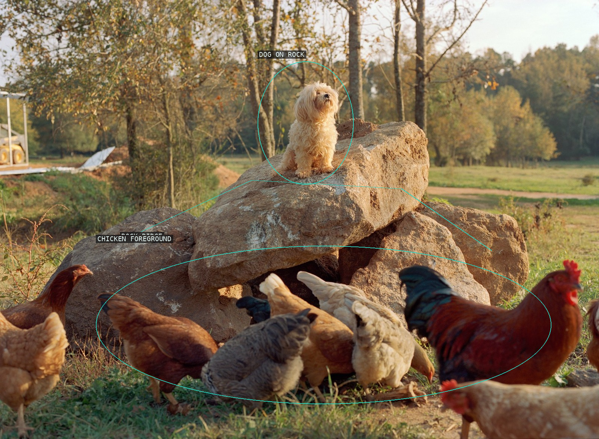
04-traditions-highway-04-2018
A perched dog stays apart from the dense chicken foreground by means of the rock's tilted ridge.
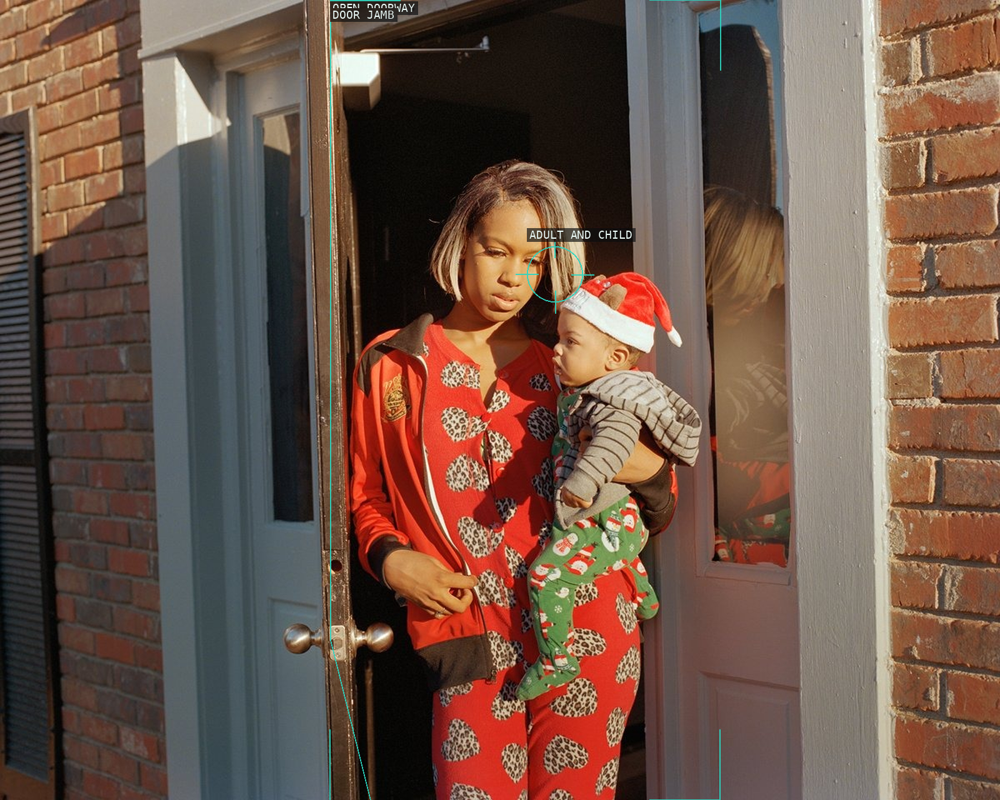
05-traditions-highway-girl-baby-2018
A doorway turns an adult and child into a bright, tightly bounded encounter.
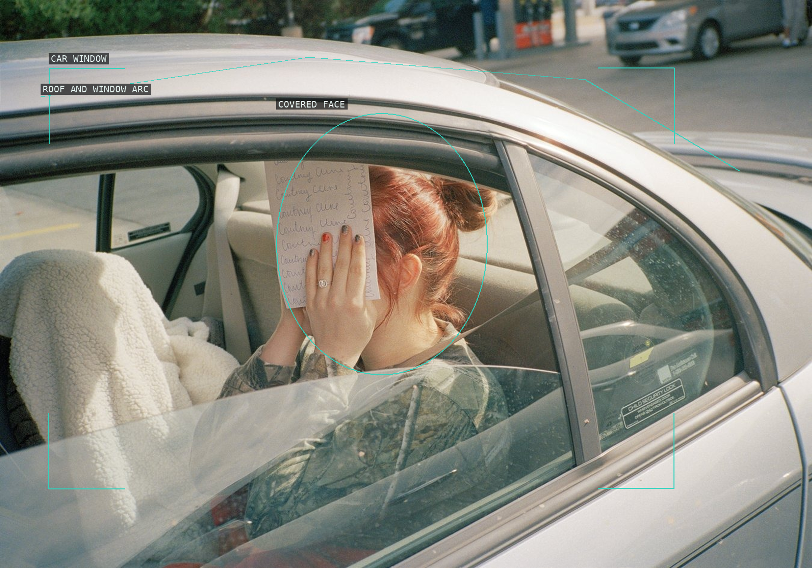
06-traditions-highway-courtney-2016
The car window encloses a face deliberately hidden by a handwritten page.
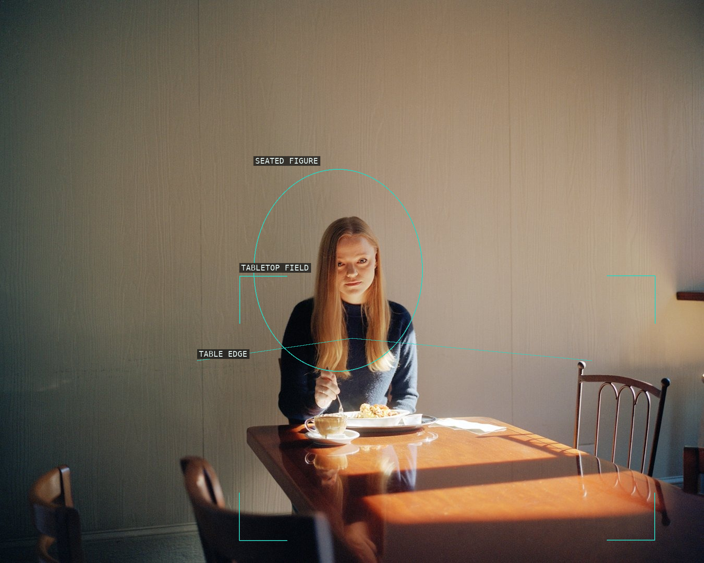
07-traditions-highway-4-2017
A seated diner occupies one end of a reflective tabletop, leaving the room's pale wall unexpectedly active.
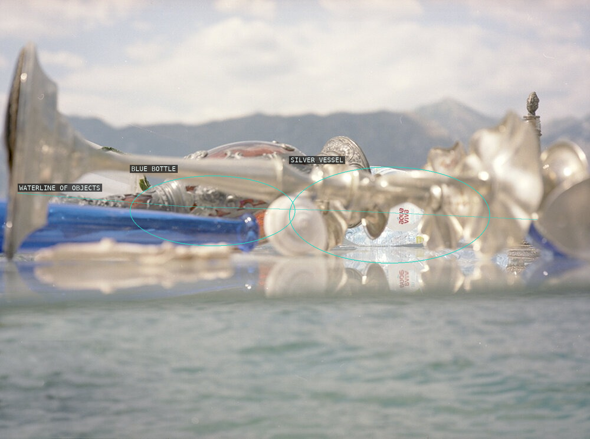
08-miracle-center-bottles-2018-20
Silver and blue objects stretch across a watery surface while mountains remain a distant band.
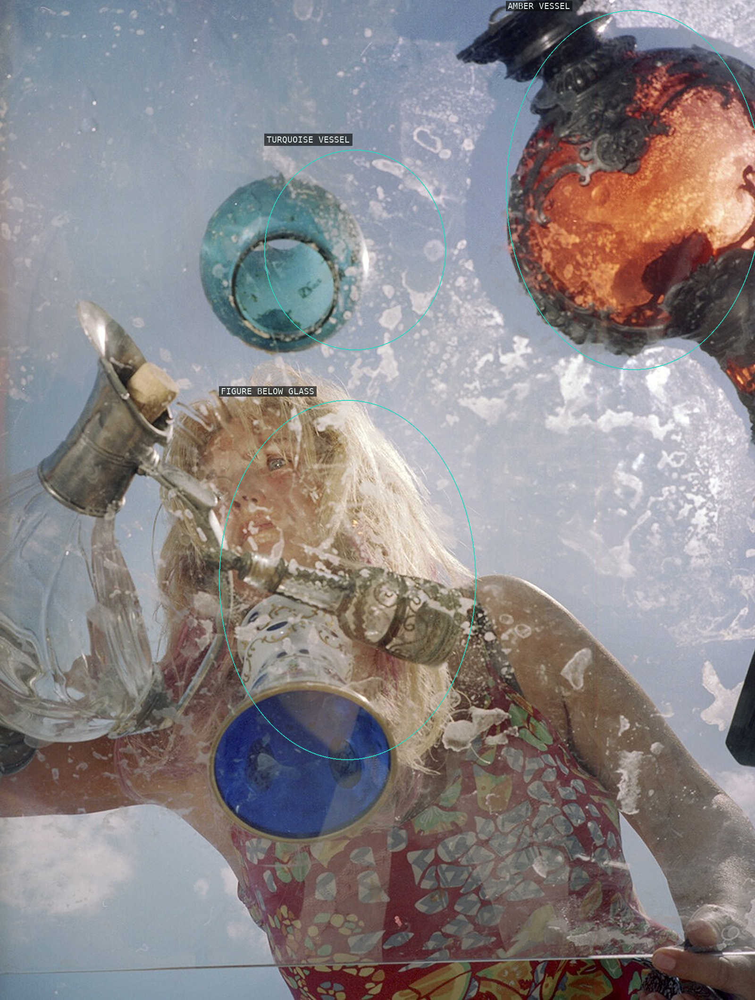
09-miracle-center-vesna-2018-20
A face and three suspended vessels are layered through a scratched, watery glass surface.
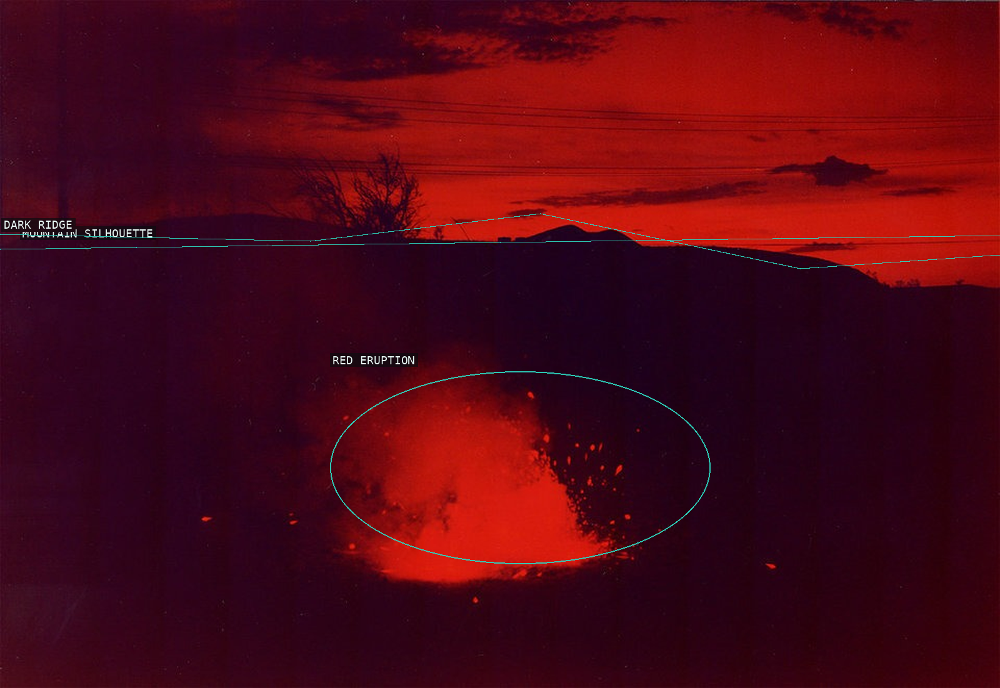
10-a-rock-that-floats-2014-16
A low mountain silhouette cuts across the red sky while the eruption makes a second, lower source of light.
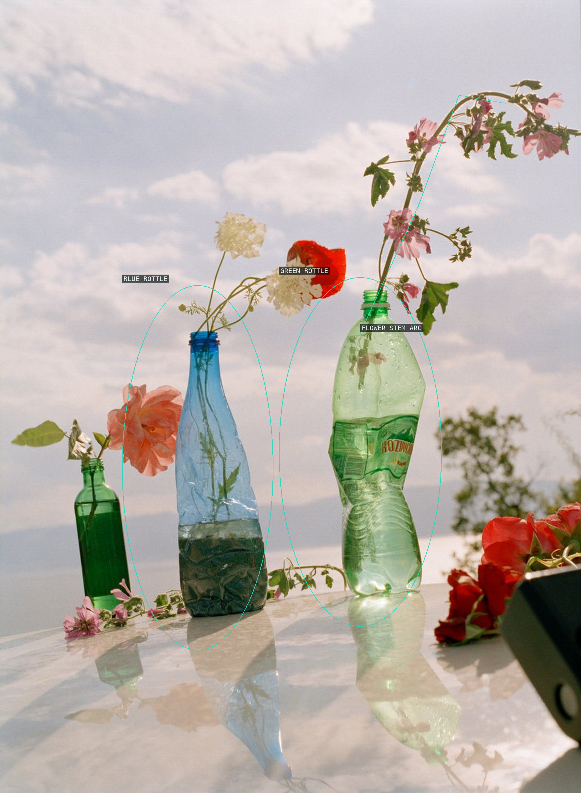
11-mountain-black-heart-2015-16
Reused bottles turn a tabletop into a vertical arrangement of colored glass, flowers, and reflection.